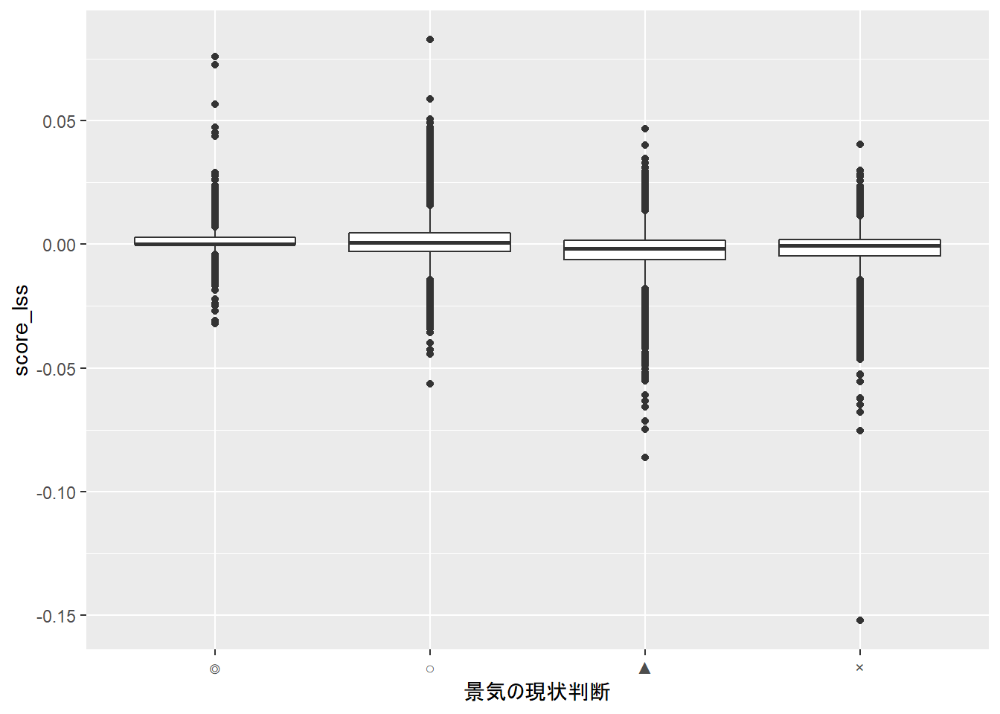
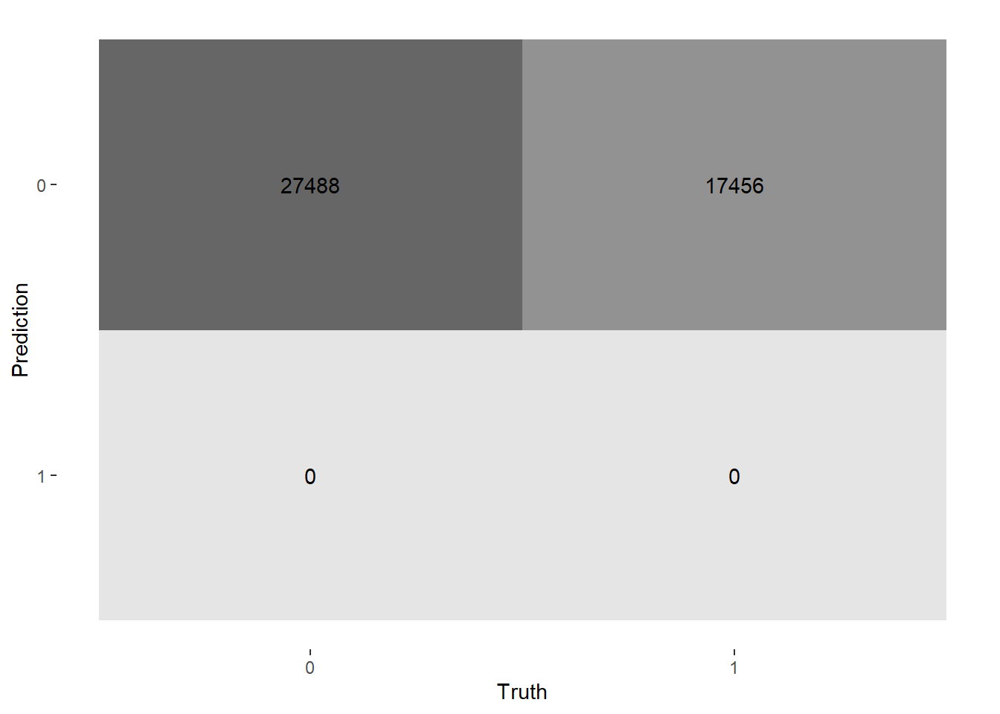
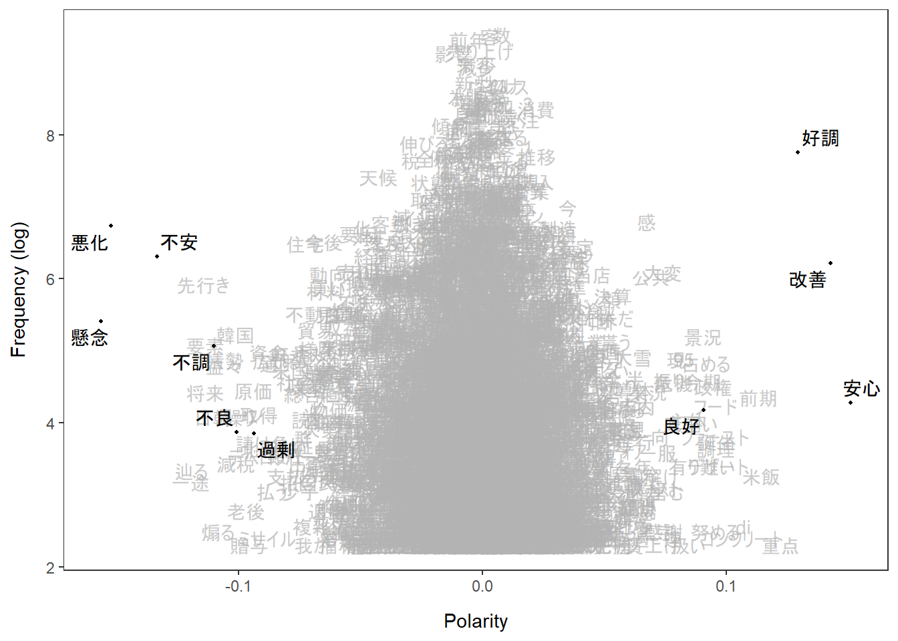

【徹底比較】センチメントスコア算出手法！！ - 第4回
1. 単語埋め込み(Word Embedding)手法について
前回までのpostで、教師なし学習である辞書ベース分類法と教師あり学習であるナイーブベイズ分類器を紹介しました。教師あり学習のほうが精度は出そうだが、教師データの準備にコストがかかり、教師なし学習は教師データは不要である一方、精度に課題があります。どちらも一長一短がある手法であり、この両者を埋め合わせる良い手法はないのかと調べていると準教師学習を用いた手法であるLatent Semantic Scalingを発見しました。
Latent Semantic Scaling: A Semisupervised Text Analysis Technique for New Domains and Languages(watanabe2020?)
この手法は単語埋め込み(word embedding)を用いているため、まずはそちらを紹介します。
単語埋め込み(Word Embedding)とは
この論文では単語埋め込み(Word Embedding)を使用しています。単語埋め込み(Word Embedding)とは、自然言語処理における言語モデリング手法の一種であり、単語や語句を固定長の実数ベクトルとして表現する手法のことです。
Works Applicationsが提供しているモデルChiveを例とすると、以下のように各単語にその単語の特徴を表現する300次元の実数ベクトル(=Embeddingベクトル)が与えられています。
chive_path = r"C:\Users\hogehoge\Watcher\chive-1.2-mc15_gensim\chive-1.2-mc15.kv"
import gensim
vectors = gensim.models.KeyedVectors.load(chive_path)
print("Embeddingベクトルの次元数：", vectors["王様"].shape[0])
## Embeddingベクトルの次元数： 300
print("Embeddingベクトルの値：", vectors["王様"][1:10])
## Embeddingベクトルの値： [ 0.08844764 -0.02172066 0.11218461 0.00986984 -0.26948628 -0.14956778
## 0.08493619 0.16736646 0.03643996]
このEmbeddingベクトルを用いて、単語同士の演算を行うことも可能です。例えば、「王様 - 男 + 女 = 女王」のようなもので、具体的には「王様」のEmbeddingベクトルから「男」のEmbeddingベクトルを減算、「女」のEmbeddingベクトルを加算し、計算結果と最も値が近い単語を返す処理をします。
print("王様 - 男 - 女：", vectors.most_similar(positive=["王様","女"], negative=["男"], topn=3))
## 王様 - 男 - 女： [('王女', 0.5806534886360168), ('女王', 0.5754266381263733), ('王妃', 0.5491030216217041)]
上記では「王女」が最も近い単語となっていますが、2番目が「女王」であり、意図した結果が返ったことが分かります。
以下のように、各単語のEmbeddingベクトルのコサイン類似度を測ることによって、或る単語と意味が近い単語を調べることも可能です。
print("関西学院大学と意味の近い単語上位3位：", vectors.most_similar(["関西学院大学"],topn=3))
## 関西学院大学と意味の近い単語上位3位： [('関西大学', 0.798370361328125), ('立命館大学', 0.7937482595443726), ('同志社大学', 0.7829927206039429)]
やはり関関同立というだけあって想定通りの結果です。また、その順番も多くの人のイメージ通りかも知れません(同じキリスト教の大学と言うことであれば、同志社大学の近いという見方もあるかも知れません)。
では、この実数ベクトルをどのように計算しているのでしょうか。Word Embeddingの手法としては、Word2Vec(Efficient Estimation of Word Representations in Vector Space (arxiv.org))が有名です。
Latent Semantic Scalingとは
政治学者である渡辺耕平さんによって提案されたWord Embeddingを利用してセンチメントスコアを単語へ付与する手法です。種語(Seed Words)と呼ばれる抽象的な意味を持つ幾つかの単語からの近さでセンチメントスコアの付与対象とする単語群の実数ベクトルを計算する準教師学習となっており、教師あり学習、教師なし学習のメリデメを補完しています。
-
教師あり学習
メリット - 学習のスピードが速く、精度も高い
デメリット - 教師データを整備するのが大変
-
教師なし学習
メリット - 教師データを用意する必要がないので、分析を始めやすい
デメリット - 学習のスピードが遅く、精度も低い
Word Embeddingの算出には特異値分解を用いています。各要素がその文書(行)におけるその単語(列)の出現頻度が入力されている行列である文書行列に対して特異値分解を行い、各単語のEmbeddingベクトルを計算します。ここで文書行列を$D$、文書行列$D$における単語(列)数を$n$とすると、
$$ D \approx U \Sigma V' $$
と分解でき、$V$が$k×n$行列となるので各単語の特徴量ベクトルと見なすことができます($k$は分析者が決定)。$V$のうち$i$列目のベクトルと$V_i$と表すと、センチメントスコアは種語$s \in S$の特徴量ベクトル$V_s$と各単語の特徴量ベクトル$V_j$のコサイン類似度から算出します。単語$f$のセンチメントスコアを$g_f$とすると、算出式は
$$ g_f = \frac{1}{|S|}\sum_{s\in S} \cos(v_s,v_f)p_s $$
となります。ここで、$p_s$は分析者が定める種語のセンチメントスコアです。種語が複数個存在する場合には平均値を使用します。。
次に、単語のセンチメントスコアを用いて文書のセンチメントスコアを算出します。文書$d$のセンチメントスコアを$y_d$とすると、その文書に含まれる単語$f\in F$を用いて
$$ y_d = \frac{1}{N}\sum_{f\in F}g_fh_f $$
で計算します。ここで、$h_f$は各単語$f$のその文書内での出現回数、$N$はその文書に含まれる単語の総数です($V$に含まれない単語は除く)。
2. Latent Semantic Scalingの実践
Latent Semantic Scalingによるセンチメントスコアの算出を行います。
前処理
Rで行っていきます。まず、サンプルデータを読み込みます。
filepath <- r"(C:\Users\hogehoge\Watcher\RawData)"
library(magrittr)
files <- stringr::str_c(filepath, list.files(filepath, pattern = "*.csv"))
sample <- readr::read_csv(files,locale=readr::locale(encoding="Shift-JIS"),show_col_types = FALSE)
sample <- sample[sample$追加説明及び具体的状況の説明!="−"|sample$追加説明及び具体的状況の説明!="＊",]
sample <- sample[sample$景気の現状判断!="□",]
sample$景気の現状判断 <- factor(sample$景気の現状判断, levels=c("◎","○","▲","×"))
次に、sudachiを用いてテキストデータのToken化を行います。Rにはsudachiを使えるパッケージが存在しないので、Pythonパッケージのsudachipyをreticulateで呼び出して使用します。
# sudachiによる形態素解析→Token化
# コーパス生成
corp <- quanteda::corpus(sample,text_field="追加説明及び具体的状況の説明")
# sudachipy呼び出し→インスタンス化
sudachipy <- reticulate::import("sudachipy")
# 正規化関数定義
sudachi_normalize <- function(tokens){
res <- c()
for(i in 0:(length(tokens)-1)){
res <- append(res,tokens[i]$normalized_form())
}
return(res)
}
# tokenize関数定義
sudachi_tokenize <- function(sentence, mode = "A"){
tokenizer_obj <- sudachipy$dictionary$Dictionary()$create()
mode <- switch(mode,
"A" = sudachipy$tokenizer$Tokenizer$SplitMode$A,
"B" = sudachipy$tokenizer$Tokenizer$SplitMode$B,
"C" = sudachipy$tokenizer$Tokenizer$SplitMode$C,
stop("Only Can Use A, B, C"))
res <- purrr::map(sentence, ~sudachi_normalize(tokenizer_obj$tokenize(., mode)))
return(res)
}
stopwords <- c("の","に","は","を","た","が","で","て","と","し","れ","さ","ある","いる",
"も","する","から","な","こと","い","や","れる","など","なっ","ない","この",
"ため","その","あっ","よう","また","もの","あり","まで","られ","なる","へ",
"か","だ","これ","おり","より","ず","なり","られる","ば","なかっ","なく",
"しかし","せ","だっ","できる","それ","う","なお","のみ","でき","き","つ",
"および","いう","さらに","ら","たり","たち","ます","ん","なら","特に",
"せる","及び","とき","にて","ほか","ながら","うち","そして","ただし",
"かつて","それぞれ","お","ほど","ほとんど","です","とも","ところ","ここ",
"居る","為る","有る","成る","来る","よる","おる")
# Token化実行
toks_sent <- corp %>%
sudachi_tokenize() %>%
quanteda::as.tokens() %>%
quanteda::tokens_remove(quanteda::stopwords("ja", source = "marimo")) %>%
quanteda::tokens_remove(c("、", "。", "・")) %>%
quanteda::tokens_remove(stopwords)
# メタデータをTokenに再付与
quanteda::docvars(toks_sent) <- quanteda::docvars(corp)
このtoks_sentから文書行列を生成します。文書行列とは、単語と文書の関係を表す行列で、各行が単語(token)、各列が文書を表し、各要素は文書中の単語の出現回数となっています。
# 文書行列の生成
dfmt_sent <- toks_sent %>%
quanteda::dfm() %>%
quanteda::dfm_remove(pattern="") %>%
quanteda::dfm_trim(min_termfreq = 10)
出現回数Top20は以下のようになっています。
print(quanteda::topfeatures(dfmt_sent, n = 20))
## 数 客 前年 売り上げ 影響 来客 減少 新型
## 11912 11752 11238 9461 9247 7908 7656 6100
## コロナ % ウイルス 販売 良い 為 増える 動き
## 5928 5893 5865 5114 5045 5037 4832 4602
## 状況 3 増加 量
## 4590 4587 4483 4402
センチメントスコアの算出
次に、種語として以下の単語を定義します。
library(magrittr)
library(LSX)
ja_seedwords <- list(positive = c("安心","好調","秀逸","改善","良好","適切","安堵"),
negative=c("不安","不調","稚拙","悪化","不良","過剰","過少","懸念")) %>%
as.seedwords()
print(ja_seedwords)
## 安心 好調 秀逸 改善 良好 適切 安堵 不安 不調 稚拙 悪化 不良 過剰 過少 懸念
## 1 1 1 1 1 1 1 -1 -1 -1 -1 -1 -1 -1 -1
上記のように、種語のスコアはポジティブ/ネガティブの最大値となっています。
文書行列に対して特異値分解を行い、センチメントスコアを算出します。Word Embeddingのサイズ$k$は300とします。
lss <- textmodel_lss(dfmt_sent, seeds = ja_seedwords, k = 300)
センチメントスコア上位・下位20単語を抜き出します。LSX::coef()で抜き出すことができ、降順で並んでいます。
print(head(coef(lss), 20)) # most positive words
## 安心 改善 好調 重点 米飯 前期
## 0.15075889 0.14272040 0.12926093 0.12218111 0.11418503 0.11297516
## di コンクリート デザート 誕生 フード 調理
## 0.10698720 0.10633358 0.09668659 0.09597283 0.09563199 0.09549041
## 努める ファースト 政権 占める 良好 景況
## 0.09523555 0.09523126 0.09446756 0.09153319 0.09054534 0.09019622
## 今期 有り難い
## 0.09003611 0.08986984
print(tail(coef(lss), 20)) # most negative words
## 贈与 老後 ローン 繰り 不良 減税
## -0.09561125 -0.09683069 -0.09875152 -0.09982278 -0.10067741 -0.10109826
## 韓国 益々 情勢 煽る 不調 日韓
## -0.10140439 -0.10567625 -0.10567861 -0.10844798 -0.11014713 -0.11054370
## 将来 要素 先行き 辿る 一途 不安
## -0.11360784 -0.11364341 -0.11439845 -0.11930636 -0.11956281 -0.13344996
## 悪化 懸念
## -0.15213723 -0.15636390
ポジティブな単語に「米飯」、「コンクリート」、「デザート」、「フード」が入っていたり、ネガティブな単語に「贈与」、「老後」が入っているなどツッコミどころはあるものの、7割はそれっぽい単語がリストアップされているのではないでしょうか。
次に、このスコアを用いて、辞書ベース分類法と同様のやり方で文書のセンチメントスコアを算出します。
# 文書のセンチメントスコア算出
coef_df <- data.frame(word=names(coef(lss)), values=as.numeric(coef(lss)))
dfmt_sent_arranged <- quanteda::dfm_match(dfmt_sent, coef_df$word)
n <- unname(quanteda::rowSums(dfmt_sent_arranged))
score_lss <- ifelse(n>0, quanteda::rowSums(dfmt_sent_arranged %*% coef_df$values)/n, NA)
sample_with_score_lss <- sample %>% cbind(score_lss)
センチメントスコア上位10位のサンプルを確認します。
sample_with_score_lss %>% dplyr::slice_max(n=10, order_by = score_lss) %>% dplyr::select(追加説明及び具体的状況の説明, score_lss)
## 追加説明及び具体的状況の説明
## 1 ・景況感が良好である。
## 2 ・好調に推移している。
## 3 ・受注が好調である。
## 4 ・主要商品である米飯、調理パンやファストフードが好調に推移している。企画商品のデリカも好調である。
## 5 ・県内企業の景況感は改善している。業況判断ＤＩが製造業で前期に比べて改善し、プラス水準を維持している。
## 6 ・客先の決算が好調である。納税額も増えている。
## 7 ・ファーストフード、デザートの陳列を増やしたので売上が増加した。
## 8 ・ファーストフード、デザートの陳列を増やしたので売上が増加した。
## 9 ・受注量が好調である。
## 10 ・受注量は好調である。
## score_lss
## 1 0.08265024
## 2 0.07564103
## 3 0.07239461
## 4 0.05859545
## 5 0.05651628
## 6 0.05048285
## 7 0.04896476
## 8 0.04896476
## 9 0.04726825
## 10 0.04726825
非常に良い結果となっているように思えます。 「米飯」、「デザート」、「フード」の謎が解けましたね。「好調」、「改善」、「増加」など肯定的な単語に共起しているため、これらの単語も肯定的と捉えられたようです。サンプルにこれらの単語を含む否定的(または中立)な文章が含まれれば、これらの単語のスコアもあるべき値に収斂すると思われます。
センチメントスコア下位10位のサンプルも確認しましょう。
sample_with_score_lss %>% dplyr::slice_min(n=10, order_by = score_lss) %>% dplyr::select(追加説明及び具体的状況の説明)
## 追加説明及び具体的状況の説明
## 1 ・全てにおいて悪化している。
## 2 ・様々な問題で悪化している。
## 3 ・客は、先行きが不安で買い控えをしている。
## 4 ・景気が悪化している。
## 5 ・原油の値上がりが懸念材料になってくる。
## 6 ・先行きが見通せない。
## 7 ・先行きが見通せない。
## 8 ・為替相場や株安により、先行きに不安がある。
## 9 ・客の業績が悪化している。
## 10 ・海外情勢への不安要素が一層顕著に表れてきている。
こちらも良さそうです。
文書分類結果
boxplotでデータ全体を見てみましょう。
# 結果の可視化
library(ggplot2)
ggplot(sample_with_score_lss, aes(x=景気の現状判断,y=score_lss)) + geom_boxplot()

先ほどとは、様相が異なっています。 上図では、横軸に「景気の現状判断」をとっていますが、景気が良い/悪いでセンチメントスコアがあまり変わらない結果となっています。サンプル全体でみると、文書分類を行える特徴量といえます。 念のため、ロジスティック回帰を行ってみます。
dataset <- sample_with_score_lss %>%
dplyr::mutate(condition=as.factor(dplyr::if_else(景気の現状判断=="○"|景気の現状判断=="◎",1,0))) %>%
dplyr::select(condition, score_lss)
sample_recipe <- recipes::recipe(condition~., dataset) %>%
recipes::step_center(recipes::all_predictors()) %>%
recipes::step_scale(recipes::all_predictors()) %>%
recipes::prep(dataset)
lr_fitted <- parsnip::logistic_reg() %>%
parsnip::set_engine("glm") %>%
parsnip::fit(condition~., data=sample_recipe %>% recipes::juice())
lr_fitted %>%
purrr::pluck("fit") %>%
gtsummary::tbl_regression() %>%
gtsummary::add_n()
| Characteristic | N | log(OR)1 | 95% CI1 | p-value |
|---|---|---|---|---|
| score_lss | 44,944 | 0.55 | 0.53, 0.57 | <0.001 |
| 1 OR = Odds Ratio, CI = Confidence Interval | ||||
推定したモデルの精度を確認するため、データセットの予測分類を計算し、正解ラベルと突合します。
lr_pred <- lr_fitted %>%
predict(dataset) %>%
dplyr::mutate(truth = dataset %>% dplyr::select(condition) %>% dplyr::pull())
正解率は約60%となりました。
lr_pred %>% yardstick::metrics(truth = truth, estimate = .pred_class)
## # A tibble: 2 x 3
## .metric .estimator .estimate
## <chr> <chr> <dbl>
## 1 accuracy binary 0.612
## 2 kap binary 0
混合行列(Confusion Matrix)を描画します。
lr_pred %>% yardstick::conf_mat(truth = truth, estimate = .pred_class) %>%
ggplot2::autoplot(type = "heatmap")

全く文書分類できていませんね。全てのサンプルの予測値が0(=ネガティブ)となってしまっています。データセットは不均衡ですが、それにしても1(=ポジティブ)の予測がまったくないのは、そもそもの特徴量がいけていないためだと思われます。
上手くいかない仮説としては、センチメントスコアがゼロ周りに多く分布しているためという理由が考えられます(つまり、センチメントスコアが大きい単語はあまり文章に含まれていない or 様々な言葉で言い換えられている)。
可視化を行い、確認してみます。
textplot_terms(lss, names(ja_seedwords))

上記の図は縦軸が頻度(対数)、横軸が極性(Polarity、センチメントスコアと解釈)となっています。極性が大きく、頻度が高い単語は種語が多く、頻度の高い単語はゼロ周りに分布していることが確認できました。 語調の強い単語以外は極性の絶対値が低いと出るようで、日本語のように強い表現があまり取られない言語では機能しずらいのかもしれません。
3. 終わりに
辞書ベース手法の時と同じく、教師あり学習以外の手法で文書分類を行うことは難しいという印象です。
次は、深層学習ベースの手法を用いて、語順や文脈を加味した分析を行います！